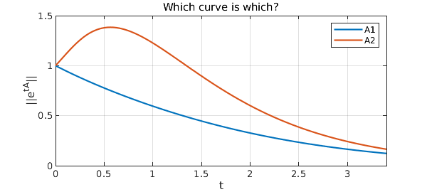

The frontispiece of the book Spectra and Pseudospectra presents a quiz involving two matrices:
format compact, format long A1 = [-1 1; 0 -1], A2 = [-1 5; 0 -2]
A1 =
-1 1
0 -1
A2 =
-1 5
0 -2
The quiz is about the behavior of solutions to the differential equation $u' = Au$, where $A$ is one of these matrices. The solution of this equation is $u(t) = e^{tA}u(0)$, where $e^{tA}$ is the exponential of the matrix $tA$, computed in MATLAB by the command expm. The maximum possible value of the quotient $\|u(t)\|/\|u(0)\|$ is equal to the matrix norm of expm(tA).
We first present the plot, then explain what it means and how we computed it with Chebfun.
e1 = chebfun(@(t) norm(expm(t*A1)),[0 3.4],'vectorize');
e2 = chebfun(@(t) norm(expm(t*A2)),[0 3.4],'vectorize');
LW = 'linewidth'; FS = 'fontsize';
plot(e1,'b',e2,'r',LW,2)
ylim([0 1.5]), grid on, legend('A1','A2')
xlabel('t',FS,14)
ylabel('||e^{tA}||',FS,14)
title('Which curve is which?',FS,16)

The plot shows two curves, one with a hump and one without. The book asks, "Which curve is which?", and doesn't reveal the answer, but here you can see that A2 is the matrix with the hump. This is surprising to some people, for one might expect the hump to correspond to A1 since it is nondiagonalizable. In fact, the nondiagonalizability of A1 is less important than the large entry $5$ in the upper-right corner of A2.
This is a natural problem for Chebfun because Chebfun is good at working with functions that don't have representations by explicit formulas. Here the function we are concerned with is norm(expm(tA)), a function of time t. Chebfun is happy to sample that function at various values of t and construct a corresponding chebfun. Since norm(expm(tA)) will not work when t is a vector, the 'vectorize' flag is included to avoid a warning message.
Once we have the chebfuns, we can do things with them. For example, here are the maximum values of the two curves and the locations where they occur:
[maxnorm1, maxt1] = max(e1) [maxnorm2, maxt2] = max(e2)
maxnorm1 =
1
maxt1 =
0
maxnorm2 =
1.383621941609019
maxt2 =
0.564256565401320
References
- L. N. Trefethen and M. Embree, Spectra and Pseudospectra: The Behavior of Nonnormal Matrices and Operators, Princeton U. Press, 2005.